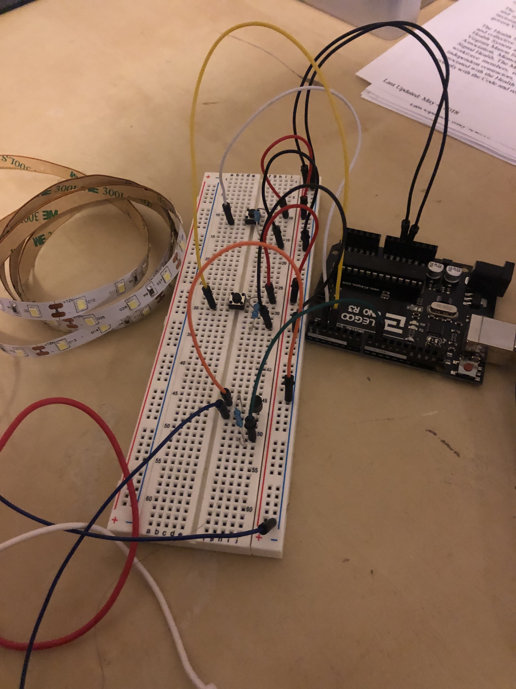
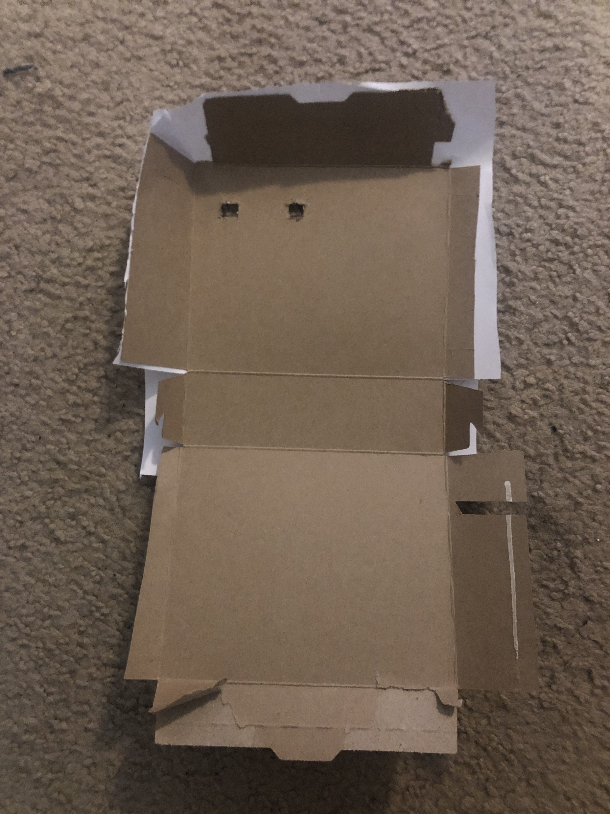
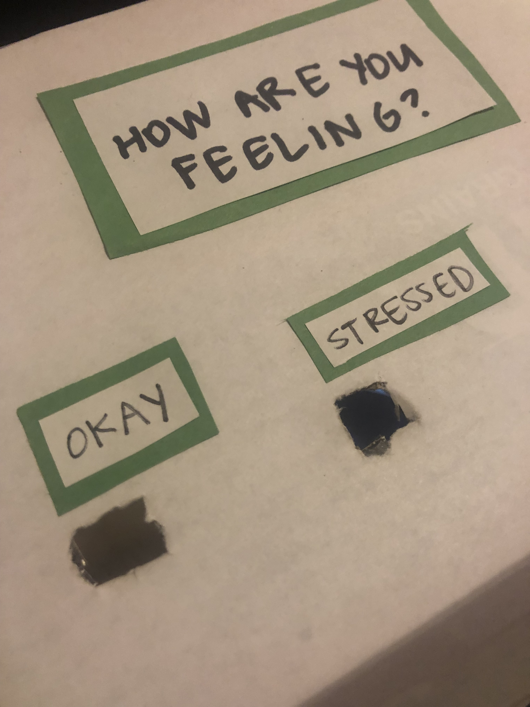

Final Project: De-stress Light
Sahana Vishwanath
This page shows all the documentation for my final project, a de-stress light.
Concept:
The concept behind my project stemmed from witnessing and experiencing myself feelings of stress. When
someone feels stressed, their breathing becomes short and shallow, which then causes more feelings of stress.
This unhealthy cycle can be broken by practicing deep or controlled breathing. The picture below shows
further details on both stressed and controlled breathing.

After doing further research on stress and deep breathing, I wanted to create something that would help faciliate
deep breathing, as it can be difficult to focus on taking deep breaths when overly stressed. In my experience,
I have found visual cues to be the most helpful in facilitating deep breathing, such as this video.
I decided to create something similar but with a light. My idea was to create a light that would fade on and off
at the rate of deep breaths, to visually stimulate the user into taking deep, controlled breaths.
Final Version:

This picture shows a box asking the user how they feel, the user can press the 'Okay' button or the 'Stressed' button. If the 'Okay' button is pressed, the lights begin to continuously fade on and off, fading on for 4 seconds, and off for 4 seconds. If the 'Stressed' button is pressed, the lights begin to fade on and off, at first fading on for 2 seconds, and off for 2 seconds, and gradually slowing down until the lights fade on for 4 seconds, and fade off for 4 seconds.
Schematic:
The schematic shows two buttons, one connected to the A2 port and the other to A3. Both buttons are connected to the 5V power, and each with a 10k ohm resistor. The schematic also displays the LED strip lights connected to the 9 pin with a 10k ohm resistor. All three of the resistors used were chosen to eliminate the amount of current and to prevent short circuiting.
Circuit:

The circuit shown above follows the schematic described earlier.
Enclosure:


The enclosure I used to cover the breadboard and all the wires was a carboard box. I first opened the box completely and placed the breadboard inside. I then marked where the holes should be made in order to see the buttons. I then opened the box again, took the breadbaord out, and cut out two square holes, as shown in the first picture above. I put the breadboard back inside the box stacked on top of 3 checkbooks to ensure that the buttons on the breadboard would be seen when the box was closed. I then taped the box closed, and added the text on the outside, as shown in the second picture above.
Firmware:
// the PWM pin the LED strip is attached to
int led = 9;
// how bright the LED is
int brightness = 0;
// sets the number of pushbutton 1 pin
const int button1Pin = 2;
// sets variable for reading pushbutton 1 status
int button1State = 0;
// sets the number of pushbutton 2 pin
const int button2Pin = 3;
// sets variable for reading pushbutton 2 status
int button2State = 0;
void setup() {
// declare pin 9 to be an output:
pinMode(led, OUTPUT);
// initializes pushbutton 1 pin as an input
pinMode(button1Pin, INPUT);
// initializes pushbutton 2 pin as an input
pinMode(button2Pin, INPUT);
}
// function to continuously loop the LED light fading on and off at a particular fadeAmount
// takes in an integer fadeAmount which indicates how much the brightness should change during each
// step off the fading on/off
void loopFading(int fadeAmount) {
while(fadeAmount) {
// sets brightness of led
analogWrite(led, brightness);
// change the brightness for next time through the loop
brightness = brightness + fadeAmount;
// reverse the direction of the fading at the ends of the fade
if (brightness <= 0 || brightness >= 255) {
fadeAmount = -fadeAmount;
}
// wait for 90 milliseconds to see the dimming effect
delay(90);
}
}
// function to loop the LED light fading on and off once at a particular fadeAmount
// takes in an integer fadeAmount which indicates how much the brightness should change during each
// step off the fading on/off
void fadeOnce(int fadeAmount) {
// sets brightness of led
analogWrite(led, brightness);
// fades led light on
for(brightness = 0; brightness <= 255; brightness = brightness + fadeAmount) {
analogWrite(led, brightness);
// wait for 90 milliseconds to see the dimming effect
delay(90);
}
// fades led light off
for(brightness = brightness; brightness >= 0; brightness = brightness - fadeAmount) {
analogWrite(led, brightness);
// wait for 90 milliseconds to see the dimming effect
delay(90);
}
}
// the loop routine runs over and over again forever
void loop() {
// reads the states of pushbuttons 1 and 2 values
button1State = digitalRead(button1Pin);
button2State = digitalRead(button2Pin);
// checks if pushbutton 1 is pressed
if (button1State == HIGH) {
// calls continuous fading loop function and sets fadeAmount to 5
loopFading(5);
}
// checks if pushbutton 2 is pressed
else if (button2State == HIGH) {
// sets fadeAmount to 15
int fadeAmount = 15;
// for loop to call fadeOnce function and decrease the fadeAmount by 1 each time - incrementally
// making fade cycle slower
for(fadeAmount = fadeAmount; fadeAmount > 5; fadeAmount --) {
// calls fadeOnce function and sets fadeAmount to decreasing value set in for loop
fadeOnce(fadeAmount);
}
}
// if neither button is pressed the following code runs
else {
// turns LED light off
digitalWrite(led, LOW);
// sets brightness to 0
brightness = 0;
}
}
The comments in the above code describe each line of in the above code in detail. The code initializes various variables as well as sets certain output and input pins. The code then makes two functions to fade the LED lights on and off a various number of times. Following this, the code calls these functions when certain buttons are pressed.
Demo Video:
If the video above does not play, please click here. The video shows how the circuit operates when the stressed button is pressed. After the button is pressed, the LED lights begin to fade on and off, starting at a fast speed, and gradually slowing down to the speed of deep breaths.